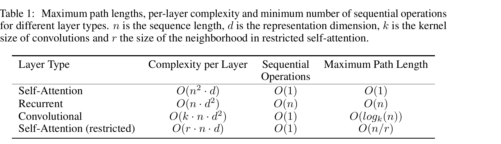

原论文 Table 1(第 6 页):不同层类型的复杂度、顺序操作数与最大路径长度(n=序列长度,d=表示维度,k=卷积核,r=邻域)
① 每层计算复杂度
序列长度 n < 表示维度 d 时,自注意力 O(n²·d) 比循环层 O(n·d²) 更快——翻译句表示大多如此
② 最少顺序操作数
自注意力只需 O(1),循环层要 O(n):并行度差距的本质来源
③ 最大路径长度
自注意力 O(1) 直连任意两位置;循环 O(n)、卷积 O(log_k(n)):长程依赖更易学习